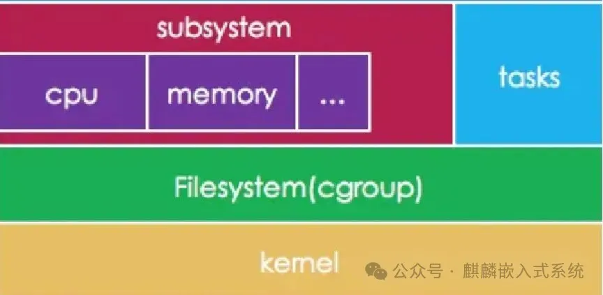

cgroup的配置介绍
在linux中，内核提供了lxc功能，这个功能是实现容器的基础，在容器中，有namespace和cgroups，这里我们先介绍一下cgroups，用于简单了解cgroups。
一、cgroups介绍
控制组（cgroups）是Linux内核提供的物理资源隔离机制，用来限制CPU，内存，IO等资源。这里只说V1，不说V2
Linux中CGROUPS如下所示


控制组有多个子系统，通过其子系统可以控制系统的功能。主要如下：
- cpuset - 为 cgroup 内的任务分配独立的处理器和内存节点；
- cpu - 使用调度程序对 cgroup 内的任务提供 CPU 资源的访问；
- cpuacct - 生成 cgroup 中所有任务的处理器使用情况报告；
- io - 限制对块设备的读写操作;
- memory - 限制 cgroup 中的一组任务的内存使用;
- devices - 限制 cgroup 中的一组任务访问设备；
- freezer - 允许 cgroup 中的一组任务挂起/恢复；
- net_cls - 允许对 cgroup 中的任务产生的网络数据包进行标记；
- net_prio - 针对 cgroup 中的每个网络接口提供一种动态修改网络流量优先级的方法；
- perf_event - 支持访问 cgroup 中的性能事件);
- hugetlb - 为 cgroup 开启对大页内存的支持;
- pid - 限制 cgroup 中的进程数量。
二、命令演示
2.1 查看linux使用的cgroups
2.2 查看当前cgroups层级
2.3 查看当前cgroups服务占用情况
三、测试示例
为了测试验证，这里需要在cpu，内存，io上进行验证
3.1 限制CPU
限制CPU主要两种
限制核心
限制使用百分比
测试代码如下：
| int main(void) {
for (; ;);
return 0;
}
gcc /root/test_cpu.c -o /root/test_cpu
|
对于限制核心，如下
设置cpuset
mkdir /sys/fs/cgroup/cpuset/test/
echo 7 > /sys/fs/cgroup/cpuset/test/cpuset.cpus
/root/test_cpu &
5233
echo 5233 > /sys/fs/cgroup/cpuset/test/tasks
taskset -p 5233
对于设置cpu,cpuacct，如下
cpu.cfs_quota_us / cpu.cfs_period_us 可作为CPU的百分比
mkdir /sys/fs/cgroup/cpu,cpuacct/test
echo 20000 > /sys/fs/cgroup/cpu,cpuacct/test/cpu.cfs_quota_us
echo 100000 > /sys/fs/cgroup/cpu,cpuacct/test/cpu.cfs_period_us
/root/test_cpu &
8359
echo 8359 > /sys/fs/cgroup/cpu,cpuacct/test/tasks
如果通过systemd，则是
systemd-run --unit=test --scope --slice=test /root/test_cpu &
systemd-run --unit=test --scope --slice=test -p CPUQuota=20% /root/test_cpu
3.2 限制内存
测试代码如下：
| #include <unistd.h>
#include <stdio.h>
#include <string.h>
#include <stdlib.h>
int main(void) {
unsigned total = 0, alloc_size = 1024 * 1024 * 100/* MiB */;
int *p = NULL;
while (1) {
if (NULL == (p = (int *)malloc(alloc_size))) {
printf("malloc failed!\n");
return0;
}
memset(p, 0xff, alloc_size);
total += alloc_size;
printf("malloc size: %uM\n", total/1024/1024);
sleep(1);
}
return0;
}
gcc /root/test_mem.c -o /root/test_mem
|
验证如下：
mkdir /sys/fs/cgroup/memory/test/
echo $(expr 1024 '*' 1024 '*' 500) > /sys/fs/cgroup/memory/test/memory.limit_in_bytes
cgexec -g memory:test /root/test_mem
malloc size: 100M,
malloc size: 200M,
malloc size: 300M,
malloc size: 400M,
已杀死
如果通过systemd
systemd-run --unit=test --scope --slice=test /root/test_mem
systemctl set-property test.scope MemoryLimit=500M
结果
memory: usage 512000kB, limit 512000kB, failcnt 156
memory+swap: usage 512000kB, limit 9007199254740988kB, failcnt 0
Memory cgroup out of memory: Killed process 3330 (test_mem) total-vm:563012kB, anon-rss:510700kB, file-rss:14808kB, shmem-rss:0kB, UID:0 pgtables:1112kB oom_score_adj:0
3.3 限制IO
对于IO，这里演示限制写的速度，如下：
mkdir /sys/fs/cgroup/blkio/test
echo "179:0 `expr 1000 '*' 1000`" > /sys/fs/cgroup/blkio/test/blkio.throttle.write_bps_device
cgexec -g blkio:test time dd if=/dev/zero count=1 bs=10M of=/root/test.img conv=fdatasync
记录了1+0 的读入
记录了1+0 的写出
10485760 bytes (10 MB, 10 MiB) copied, 10.0687 s, 1.0 MB/s
使用systemd
systemd-run --unit=test --scope --slice=test -p "IOWriteBandwidthMax=/dev/mmcblk0p6 1M" time dd if=/dev/zero count=1 bs=10M of=/root/test.img conv=fdatasync
Running scope as unit: test.scope
记录了1+0 的读入
记录了1+0 的写出
10485760 bytes (10 MB, 10 MiB) copied, 10.4876 s, 1000 kB/s
四、调用分析
对于上面的示例，主要根据如下分析调用关系
- sysfs
- cpuset
- cpuacct
- memory
- io
4.1 sysfs创建
这里从start_kernel如下
| start_kernel----init/main.c
cgroup_init_early
cgroup_init_subsys
cgroup_init---init/main.c
cgroup_init_subsys
WARN_ON(sysfs_create_mount_point(fs_kobj, "cgroup"));
WARN_ON(cgroup_add_legacy_cftypes(ss, ss->legacy_cftypes));
cgroup_add_cftypes
cgroup_init_cftypes
cgroup_apply_cftypes
cgroup_addrm_files
cgroup_add_file
__kernfs_create_file（创建sysfs文件）
|
4.2 cgroups文件系统结构
| struct cgroup_subsys {
struct cgroup_subsys_state *(*css_alloc)(struct cgroup_subsys_state *parent_css);
int (*css_online)(struct cgroup_subsys_state *css);
void (*css_offline)(struct cgroup_subsys_state *css);
void (*css_released)(struct cgroup_subsys_state *css);
void (*css_free)(struct cgroup_subsys_state *css);
void (*css_reset)(struct cgroup_subsys_state *css);
void (*css_rstat_flush)(struct cgroup_subsys_state *css, int cpu);
int (*css_extra_stat_show)(struct seq_file *seq,
struct cgroup_subsys_state *css);
int (*can_attach)(struct cgroup_taskset *tset);
void (*cancel_attach)(struct cgroup_taskset *tset);
void (*attach)(struct cgroup_taskset *tset);
void (*post_attach)(void);
int (*can_fork)(struct task_struct *task,
struct css_set *cset);
void (*cancel_fork)(struct task_struct *task, struct css_set *cset);
void (*fork)(struct task_struct *task);
void (*exit)(struct task_struct *task);
void (*release)(struct task_struct *task);
void (*bind)(struct cgroup_subsys_state *root_css);
};
|
4.3 sysfs的文件操作结构
| cgroup_init_cftypes
cgroup_kf_ops
static struct kernfs_ops cgroup_kf_ops = {
.atomic_write_len = PAGE_SIZE,
.open = cgroup_file_open,
.release = cgroup_file_release,
.write = cgroup_file_write,
.poll = cgroup_file_poll,
.seq_start = cgroup_seqfile_start,
.seq_next = cgroup_seqfile_next,
.seq_stop = cgroup_seqfile_stop,
.seq_show = cgroup_seqfile_show,
};
|
4.4 cpuset流程
| cpuset_cgrp_subsys
struct cftype legacy_files[]
.name = "cpus",
.write = cpuset_write_resmask,
update_cpumask
cpumask_and
|
这里cpumask_and是对CPU掩码信息与的函数
4.5 cpuset结构体
| struct cgroup_subsys cpuset_cgrp_subsys = {
.css_alloc = cpuset_css_alloc,
.css_online = cpuset_css_online,
.css_offline = cpuset_css_offline,
.css_free = cpuset_css_free,
.can_attach = cpuset_can_attach,
.cancel_attach = cpuset_cancel_attach,
.attach = cpuset_attach,
.post_attach = cpuset_post_attach,
.bind = cpuset_bind,
.fork = cpuset_fork,
.legacy_cftypes = legacy_files,
.dfl_cftypes = dfl_files,
.early_init = true,
.threaded = true,
};
|
4.6 cpuacct流程
| cpuacct_cgrp_subsys
struct cftype cpu_legacy_files[]
.name = "cfs_quota_us",
.write_s64 = cpu_cfs_quota_write_s64,
tg_set_cfs_quota
tg_set_cfs_bandwidth
unthrottle_cfs_rq
.name = "cfs_period_us",
.write_u64 = cpu_cfs_period_write_u64,
tg_set_cfs_period
tg_set_cfs_bandwidth
unthrottle_cfs_rq
|
这里unthrottle_cfs_rq 控制CPU带宽（给定周期时间内消耗CPU的时间）的具体函数
4.7 cpuacct结构
| struct cgroup_subsys cpuacct_cgrp_subsys = {
.css_alloc = cpuacct_css_alloc,
.css_free = cpuacct_css_free,
.legacy_cftypes = files,
.early_init = true,
};
|
4.8 memory流程
| memory_cgrp_subsys
struct cftype mem_cgroup_legacy_files[]
.name = "limit_in_bytes",
.write = mem_cgroup_write,
mem_cgroup_resize_max
page_counter_set_max
|
这里page_counter_set_max是设置系统允许使用的最大页数
4.9 memory cgroup结构
| struct cgroup_subsys memory_cgrp_subsys = {
.css_alloc = mem_cgroup_css_alloc,
.css_online = mem_cgroup_css_online,
.css_offline = mem_cgroup_css_offline,
.css_released = mem_cgroup_css_released,
.css_free = mem_cgroup_css_free,
.css_reset = mem_cgroup_css_reset,
.can_attach = mem_cgroup_can_attach,
.cancel_attach = mem_cgroup_cancel_attach,
.post_attach = mem_cgroup_move_task,
.bind = mem_cgroup_bind,
.dfl_cftypes = memory_files,
.legacy_cftypes = mem_cgroup_legacy_files,
.early_init = 0,
};
|
4.10 io流程
| blkcg_policy_register
if (pol->legacy_cftypes)
WARN_ON(cgroup_add_legacy_cftypes(&io_cgrp_subsys, pol->legacy_cftypes));
module_init(throtl_init);
blkcg_policy_register(&blkcg_policy_throtl);
static struct blkcg_policy blkcg_policy_throtl = {
.dfl_cftypes = throtl_files,
.legacy_cftypes = throtl_legacy_files,
.pd_alloc_fn = throtl_pd_alloc,
.pd_init_fn = throtl_pd_init,
.pd_online_fn = throtl_pd_online,
.pd_offline_fn = throtl_pd_offline,
.pd_free_fn = throtl_pd_free,
};
struct cftype throtl_legacy_files[]
.name = "throttle.write_bps_device",
.write = tg_set_conf_u64,
tg_set_conf
tg_conf_updated
tg_bps_limit
tg->bps[rw][td->limit_index];
|
这里throtl_grp是用来控制IO参数的结构体，对tg->bps写值可以控制其bps大小
4.11 io cgroup 结构
| struct cgroup_subsys io_cgrp_subsys = {
.css_alloc = blkcg_css_alloc,
.css_online = blkcg_css_online,
.css_offline = blkcg_css_offline,
.css_free = blkcg_css_free,
.can_attach = blkcg_can_attach,
.css_rstat_flush = blkcg_rstat_flush,
.bind = blkcg_bind,
.dfl_cftypes = blkcg_files,
.legacy_cftypes = blkcg_legacy_files,
.legacy_name = "blkio",
.exit = blkcg_exit,
#ifdef CONFIG_MEMCG
/*
* This ensures that, if available, memcg is automatically enabled
* together on the default hierarchy so that the owner cgroup can
* be retrieved from writeback pages.
*/
.depends_on = 1 << memory_cgrp_id,
#endif
};
struct throtl_grp {
/* internally used bytes per second rate limits */
uint64_t bps[2][LIMIT_CNT];
......
}
|
五、总结
至此，我们能够简单了解了cgroups，cgroups是在linux 容器中的对资源隔离的必要手段。
cgroup的配置介绍